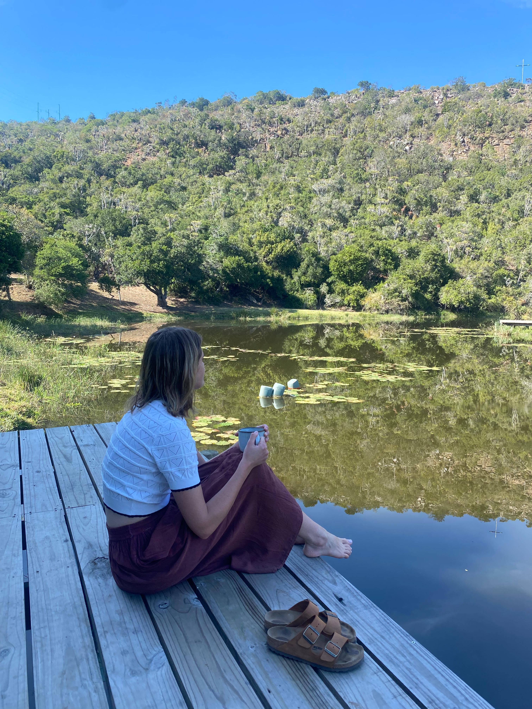

from wherever you are
Book a SessionSpecialist Wellness Counsellor | BA Hons (Psychology)
East London
Hi, I am Jané Lord. The youth of South Africa is especially close to my heart. My five years of teaching experience, along with my role as a youth worker and school counsellor, have given me valuable insight into the challenges faced by learners, teachers, and parents. I believe it is part of my calling to walk alongside young people as they grow into resilient, confident, and purposeful individuals.
I am a dedicated and professional counsellor who works effectively both independently and within a team. I am a highly organised and efficient individual who approaches each client with positivity, empathy, and perseverance, supporting meaningful growth and lasting outcomes. I am grounded in my roots and values, which guide both my work and relationships. I focus on spiritual, physical and emotional well-being as important pillars in the counselling journey.
I practise a person-centered approach, allowing the client to make their own decisions and discover their own potential through the counselling sessions. With the right guidance, supportive structures, and faith as small as a mustard seed, I believe clients can climb even the greatest of mountains.
6-12 Year Olds
1 hour | R450
13-18 Year Olds
1 hour | R450
Adults
1 hour | R450
Schools & Teachers
2 hours
"Ek kan met Tannie oor enigiets praat. Tannie gee goeie advies, is altyd vriendelik en judge glad nie."
- L.M.
"Tannie se sessies het baie gehelp. Goed voel nou beter en ek kan maklik sê hoe ek voel en hoe om boelies te hanteer."
- N.W.
"Die Studiewerkswinkel was in baie diepte verduidelik. Dit het dit meer verstaanbaar gemaak. Ek het ook geleer hoe om studie inligting beter te onthou."
- J.W.W.
"Ek het n baie positiewe ondervinding gehad by die studievaardighede-werkswinkel. Ek het geleer hoe om ‘n mind map te doen en n studierooster op te stel. Die mind map & studierooster sal baie help met die eksamens."
- W.B.
"Ek het geleer daar is verskeie maniere hoe om te leer. Die studievaardighede-werkswinkel was baie insiggewend."
- T.K.
"Ek het by die studievaardighede-werkswinkel geleer hoe om opsommings beter en slimmer te doen. Tannie het baie goed verduidelik."
- L.E.
"The sessions really changed my view of self, others & the world"
- T.S.
